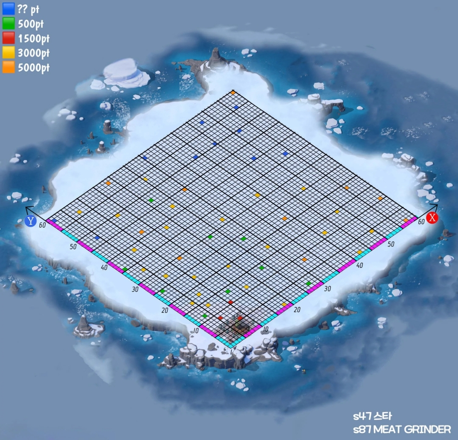

The tricks that actually move the needle early — furnace focus, island buffs, construction speed stacking, and how to not waste your first SvS.
Your Furnace level is the single biggest gate in the game — it caps almost everything else (buildings, troop tiers, hero levels, island access). New players often spread resources thin upgrading random buildings. Don't. The fastest way to grow is:
Every Furnace level also unlocks new buildings and features (Drill Camp for hero leveling at 13, the Dock and Daybreak Island at 19, and so on) — so rushing it isn't just about combat power, it's what unlocks the rest of this guide.
Construction speed bonuses stack, but only if you activate them before you start the upgrade — none of them apply retroactively. The order that gets you the biggest discount:
Pet + Double Time alone is roughly a third off the timer for free — don't skip it on anything that takes more than a few minutes.
Unlocked at Furnace 6. It runs on Contentment (earned passively as your survivors work — upgrade resource buildings to earn it faster, or buy some with gems if you're in a hurry). There are 6 orders, each with its own cooldown, and you can run several at once. The two worth knowing from day one:
General rule for the order to request them in: enact Double Time right before any big construction push, save Overdrive for when you're about to dump a lot of resources into upgrades or troop training, and don't let Contentment sit unused — if you're capped and not about to build, spend it rather than waste the trickle.
The shop sells timed buffs (gathering speed, resource boosts, troop training speed, etc.) that run for a fixed number of hours from the moment you buy them. The mistake almost everyone makes early on: buying the buff after queuing a long gather or a big training batch, wasting most of the window.
Unlocked once your Furnace hits level 19 (via the Dock building). Your survivors sail off and find it after about 3 days. It starts as forest around the Tree of Life — you build two Lumber Camps to clear it, and clearing trees has a chance to drop chests with Life Essence, hero shards, and gear.
Life Essence is the island's main currency — you earn it from clearing wood (roughly 1 per 720 wood cleared) and spend it on buildings and decorations. Everything you place on the island adds to a Prosperity Bonus, which levels up the Tree of Life — that's what actually grants you stat bonuses back in your city, similar to how the Furnace works for your base.
Buildings/decorations fall into 4 types: Basic (pure decoration, no bonus), Vegetation (mostly decorative, a few give bonus — check before buying), Others (cost Life Essence, give Prosperity Bonus, each has its own placement limit), and Limited (seasonal, usually free, and give a big bonus when available). Prioritize Prosperity-Bonus buildings over pure decoration early on — you can always make it pretty later.
As you clear the island, treasure chests turn up worth different amounts of points depending on their tier — the colors below show where the higher-value ones tend to appear.

State vs State (SvS) is a multi-day event where each day scores a different kind of activity — construction, research, beast hunts, troop training, gear upgrades. The trick is that most of what you'd normally use whenever you feel like it (speedups, Fire Crystals, Mithril, Wild Marks, hero shards, gems) scores far more points if you save it and spend it on the matching day instead of burning it early.
Someone who dumps a big pile of speedups on a random Tuesday gets a faster city. Someone who saves the same pile for SvS gets a faster city and a pile of alliance points. Same resources, very different outcome — so once your alliance calls "saving mode," it's worth actually following it.
Your alliance keeps a running list of exactly what to save and which day to use it on — check the Copy-Paste Hub in Tools for the day-by-day breakdown once you're in.
Between Bear Trap, Foundry, Canyon, Crazy Joe, SvS phases, and whatever seasonal event is running, it's easy to lose track of what's happening when. Two habits that help:
If something looks unclear or the schedule conflicts with what you were told in chat, ask an R4/R5 rather than guessing — timing mistakes (like using savings a day early) are the easiest ones to avoid.